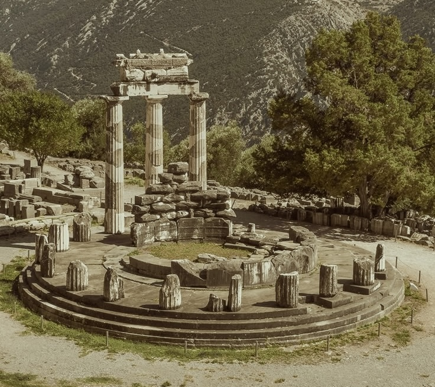

Naturally, my attention was caught by the sentence, 'I leave to various future times, but not to all, my garden of forking paths: I had no sooner read this, than I understood. The Garden of Forking Paths was the chaotic novel itself. The phrase 'to various future times, but not to all' suggested the image of bifurcating in time, not in space. Rereading the whole work confirmed this theory. In all fiction, when a man is faced with alternatives he chooses one at the expense of the others. In the almost unfathomable Ts'ui Pen, he chooses - simultaneously - all of them. He thus creates various futures, various times which start others that will in their turn branch out and bifurcate in other times. This is the cause of the contradictions in the novel.
No one saw him disembark in the unanimous night, no one saw the bamboo canoe sink into the sacred mud, but in a few days there was no one who did not know that the taciturn man came from the South and that his home had been one of those numberless villages upstream in the deeply cleft side of the mountain, where the Zend language has not been contaminated by Greek and where leprosy is infrequent. What is certain is that the grey man kissed the mud, climbed up the bank with pushing aside (probably, without feeling) the blades which were lacerating his flesh, and crawled, nauseated and bloodstained, up to the circular enclosure crowned with a stone tiger or horse, which sometimes was the color of flame and now was that of ashes. This circle was a temple which had been devoured by ancient fires, profaned by the miasmal jungle, and whose god no longer received the homage of men. The stranger stretched himself out beneath the pedestal.
Under the trees of England I meditated on this lost and perhaps mythical labyrinth. I imagined it untouched and perfect on the secret summit of some mountain; I imagined it drowned under rice paddies or beneath the sea; I imagined it infinite, made not only of eight-sided pavilions and of twisting paths but also of rivers, provinces and kingdoms ... I thought of a maze of mazes, of a sinuous, ever growing maze which would take in both past and future and would somehow involve the stars.
In general, his days were happy; when he closed his eyes, he thought: Now I will be with my son. Or, more rarely: The son I have engendered is waiting for me and will not exist if I do not go to him.
in the space left on the shelf by the Wiclif, but in the end I decided to hide it behind the volumes of a broken set of The Thousand and One Nights. I went to bed and did not sleep. At three or four in the morning, I turned on the light. I got down the impossible book and leafed through its pages. On one of them I saw an engraved a mask. The upper corner of the page carried a number, which I no longer recall, elevated to the ninth power.
I showed no one my treasure. To the luck of owning it was added the fear of having it stolen,
and then the misgiving that it might not truly be
infinite. These twin preoccupations intensified my
old misanthropy. I had only a few friends left; I
now stopped seeing even them. A prisoner of the
book, I almost never went out anymore. After
studying its frayed spine and covers with a magni-
fying glass, I rejected the possibility of a contriv-
ance of any sort. The small illustrations, I verified,
came two thousand pages apart.
In this labyrinth of time, I found a reflection of my own thoughts and experiences. Each path I took seemed to lead to another, each decision branching off into a multitude of possibilities. It was a dizzying realization, one that made me question the very nature of choice and consequence. Was I, like Ts'ui Pen, creating my own reality with every decision I made? Or was I merely a traveler in a preordained maze, following a path laid out for me by forces beyond my control?
To the luck of owning it was added the fear of having it stolen, and then the misgiving that it might not truly be infinite. These twin preoccupations intensified my old misanthropy. I had only a few friends left; I now stopped seeing even them. A prisoner of the book, I almost never went out anymore. After studying its frayed spine and covers with a magnifying glass, I rejected the possibility of a contrivance of any sort. The small illustrations, I verified, came two thousand pages apart. I set about listing them alphabetically in a notebook, which I was not long in filling up. Never once was an illustration repeated. At night, in the meager intervals my insomnia granted, I dreamed of the book.
I opened the book at random. The script was strange to me. The pages, which were worn and typographically poor, were laid out in double columns, as in a Bible. The text was closely printed, and it was ordered in versicles. In the upper corners of the pages were Arabic numbers
He was satisfied with the examination. He deliberately did not dream for a night; he took up the heart again, invoked the name of a planet, and undertook the vision of another of the principle organs. Within a year he had come to the skeleton and the eyelids. The innumerable hair was perhaps the most difficult task. He dreamed an entire man--a young man, but who did not sit up or talk, who was unable to open his eyes. Night after night, the man dreamt him asleep.
"I see that the worthy Hsi P'eng has troubled himself to see to relieving my solitude. No doubt you want to see the garden?"
Recognizing the name of one of our consuls, I replied, somewhat taken aback.
"The garden?"
"The garden of forking paths."
Something stirred in my memory and I said, with incomprehensible assurance:
"The garden of my ancestor, Ts'ui Pen."
"Your ancestor? Your illustrious ancestor? Come in."
His misgivings ended abruptly, but not without certain forewarnings. First (after a long drought) a remote cloud, as light as a bird, appeared on a hill; then, toward the South, the sky took on the rose color of leopard's gums; then came clouds of smoke which rusted the metal of the nights; afterwards came the panic-stricken flight of wild animals. For what had happened many centuries before was repeating itself. The ruins of the sanctuary of the god of Fire was destroyed by fire. In a dawn without birds, the wizard saw the concentric fire licking the walls. For a moment, he thought of taking refuge in the water, but then he understood that death was coming to crown his old age and absolve him from his labors. He walked toward the sheets of flame. They did not bite his flesh, they caressed him and flooded him without heat or combustion. With relief, with humiliation, with terror, he understood that he also was an illusion, that someone else was dreaming him.

I thought that a man might be an enemy of other men, of the differing moments of other men, but never an enemy of a country: not of fireflies, words, gardens, streams, or the West wind.
He dreamed that it was warm, secret, about the size of a clenched fist, and of a garnet color within the penumbra of a human body as yet without face or sex; during fourteen lucid nights he dreampt of it with meticulous love. Every night he perceived it more clearly. He did not touch it; he only permitted himself to witness it, to observe it, and occasionally to rectify it with a glance. He perceived it and lived it from all angles and distances. On the fourteenth night he lightly touched the pulmonary artery with his index finger, then the whole heart, outside and inside. He was satisfied with the examination. He deliberately did not dream for a night; he took up the heart again, invoked the name of a planet, and undertook the vision of another of the principle organs. Within a year he had come to the skeleton and the eyelids. The innumerable hair was perhaps the most difficult task. He dreamed an entire man--a young man, but who did not sit up or talk, who was unable to open his eyes. Night after night, the man dreamt him asleep.
He believed in an infinite series of times, in a dizzily growing, ever spreading network of diverging, converging and parallel times. This web of time - the strands of which approach one another, bifurcate, intersect or ignore each other through the centuries - embraces every possibility. We do not exist in most of them. In some you exist and not I, while in others I do, and you do not, and in yet others both of us exist. In this one, in which chance has favored me, you have come to my gate. In another, you, crossing the garden, have found me dead. In yet another, I say these very same words, but am an error, a phantom."